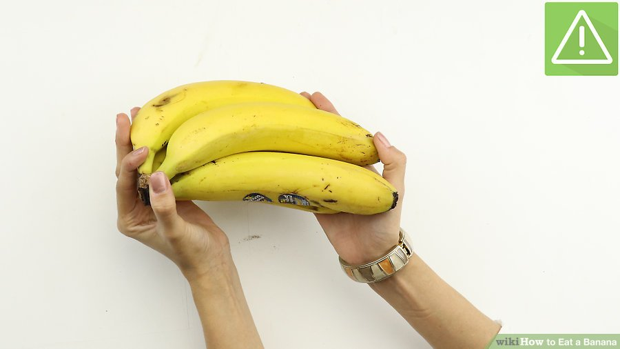
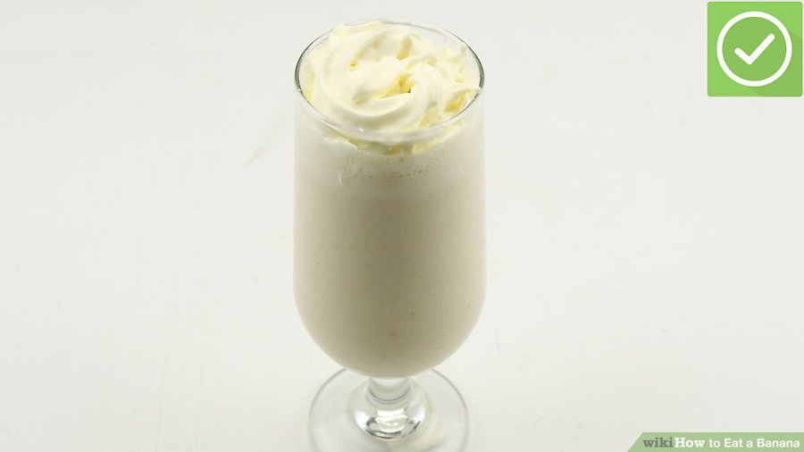
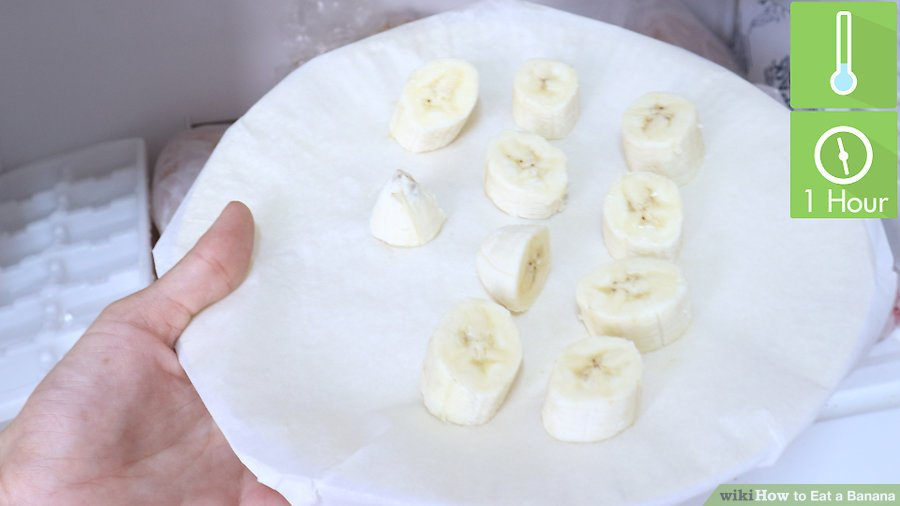
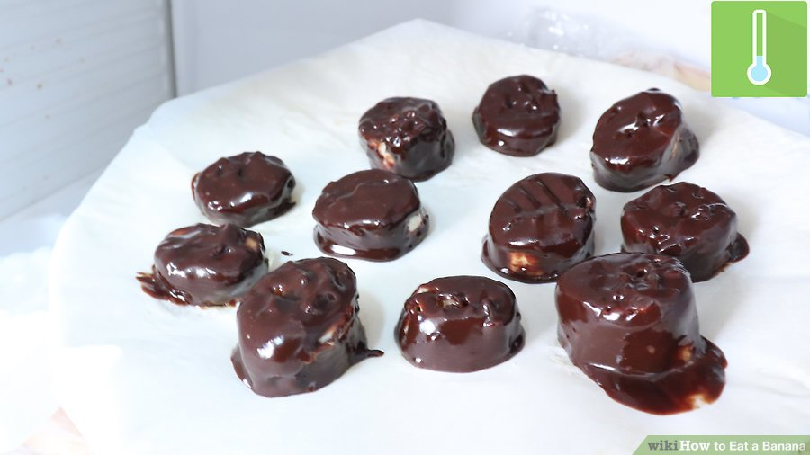
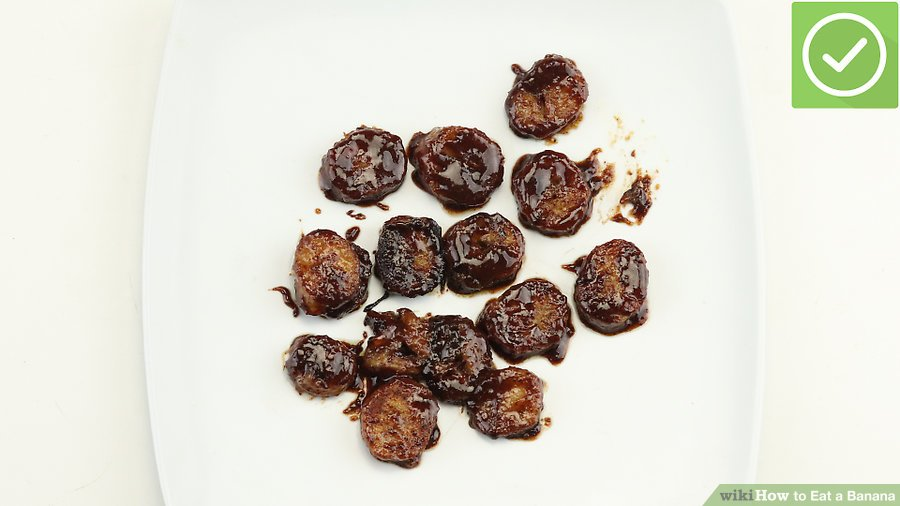
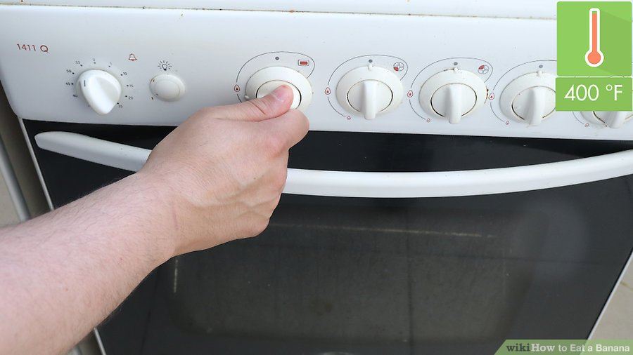
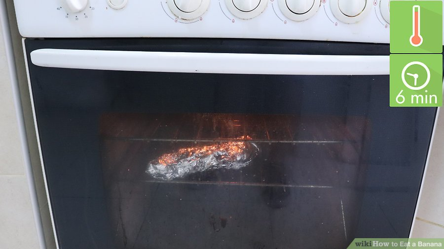
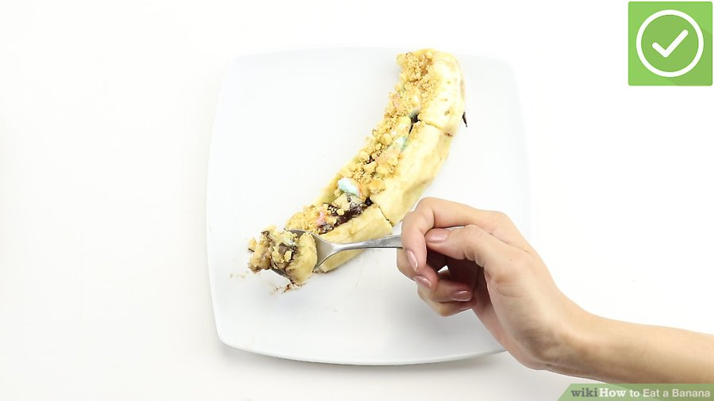

For some people, a banana might be a completely new and foreign fruit, while for others it could be a part of their daily lives. Eating a banana is relatively simple: you find the right one, peel it, and eat it. But did you know that there are lots of other ways you can eat a banana? You can eat it in your cereal or in a smoothie. You can even eat it frozen, fried, or grilled!
Method one: Eating Banana
-

- Buy a ripe banana. for a banana that is yellow and lightly speckled with small brown or black spots. Some people prefer the firmer yellow-all-over stage; some prefer the softer, sweeter, stronger-flavored yellow-and-brownish stage.
- If the banana is not ripe, you can leave it on a warm counter for a day or two.
- Introverted behavior is a sign of a normal social temperament, characterized by a preference for solitude. Introverts are task-oriented, and typically more engaged in solitary reflection and less engaged by interacting with others. While introverts may seem to display some of the superficial characteristics of antisocial behavior, there is no direct link between the two.
- Some people prefer to peel the entire thing and then eat it, while others peel as they go. There's many ways to peel a banana. If you have not peeled one before, you might find one of these methods easy:
- Peel the banana from the stem end. Snap back the stalk at the top of the fruit, then pull it downwards alongside the fruit. Pull the rest of the skin off in similar strips.
- Peel the banana from the blossom end. This is the flat, brown stub at the end of the banana. Pinch just behind the blossom end to break it apart, then peel bits of it downward.
- If you don't want the whole banana at once, cut it in half before peeling. Cover the half you won't be eating right away with plastic wrap, and store it in the fridge.
- Remove the "strings." Bananas have fibrous strands between the skin and the fruit. These usually come off along with the peel, but sometimes they may stick to the fruit. Gently peel these off before eating the banana. They are not bad for you, but many people find them to have a bitter taste and odd texture.
- Eat the banana. You can eat the banana bite by bite, peeling a little bit of it as you go. You can also peel it all at once, slice it with a knife, and eat it with a fork. You can even use it in smoothies, dip it in chocolate and freeze it, fry it, or even grill it! Here are some ideas to get you started:
- Add a sliced banana to cereal or oatmeal.
- Drizzle some honey over banana slices for extra sweetness.
- Make a peanut butter banana sandwich on whole wheat bread.
- Cut a banana in half lengthwise, and fill it with peanut butter. Put the banana back together, and eat it like a sandwich.
- Get rid of the skin. If you are in an in-closed area, such as a room, throw it away in a closed bag or closed trashcan, otherwise the banana will fill the room with its odor.
- Alternatively, you can also save the banana peel to use as compost in your garden.


Method 2: Making a Peanut Butter Banana Smothie
- Add a peeled and sliced banana into a blender. Slicing the banana up first will make it easier to blend and give you a smoother drink in the end. For an extra-thick smoothie, use a frozen banana.
- Add the milk and yogurt. For a thicker smoothie, omit the milk and use ⅔ cup (165 grams) yogurt.
- Top it off with peanut butter. If you don't like peanut butter, you can use another type of nut butter, such as almond. You can also use some chocolate sauce instead (start with 2 tablespoons, then add more if needed).
- Blend the ingredients until smooth. If the smoothie is not thick enough for you, toss in 5 to 7 ice cubes. 
- Pour into two tall glasses and serve immediately. You can garnish each glass with some whipped cream, or a swirl of chocolate and/or caramel sauce.


Method three: Making Frozen Banana Bites
- Cut the banana into ½-inch (1.27 centimeters) thick slices. Peel the banana first, and remove any fibrous strands. Cut the banana into thin slices with a sharp knife. 
- Freeze the bananas for 1 hour. Cover a baking sheet with wax paper and spread the bananas across it in an even layer.
- Melt the chocolate chips and coconut oil in a small bowl. Place the chocolate chips and coconut oil in a small bowl and heat for 30 seconds. Give the mixture a stir, and heat for another 15 seconds. Stir it until all the chocolate chips have melted and the mixture is smooth. If necessary, heat the mixture for another few seconds.
- Set the mixture aside and take out the bananas. If you'd like, you can glue two banana slices together with some peanut butter to make mini banana sandwiches. This is completely optional, but it makes quite the treat!
- Dip the banana slices in the cooled chocolate. Once the chocolate has cooled, spear a banana slice onto a fork, and dip it into the chocolate. Use a spoon to help you pour chocolate onto any hard-to-reach areas.
- For an added touch, you can dip the banana slice into some crushed walnuts for extra protein.
- Place the coated banana slice back onto the wax paper lined baking sheet. Keep dipping banana slices until you have none left. 
- Put the bananas back into the freezer until the chocolate is set and the bananas are frozen. At this point, they are ready to eat. You can store them in small, plastic sandwich bags for easy snacking.


Method four: Making Fried Cinnamon Bananas
- Cut the bananas into ½-inch (1.27 centimeters) long pieces. Set the bananas slices aside, but have them ready for frying.
- Melt the honey, butter, and cinnamon in a frying pan over medium-high heat. Stir them with a spatula as they melt so that they get mixed together. Once the butter is melted and bubbling, you are ready for the next step.
- Toss in the banana slices and fry them for 4 minutes. As the bananas cook, they will start to caramelize and turn a golden brown color. If they start to burn too fast, however, turn the heat down.
- Flip the banana slices over and fry them for another 4 minutes. They are ready when both sides are a golden brown color. Be sure to have a plate ready for serving. 
- Serve the fired bananas immediately. You can serve them on their own, or with other foods, such as: French toast, ice cream, pancakes, or yogurt.


Method five: Making a Grilled S'more Banana
-

- Preheat your grill to medium-high heat. If you don't have a grill, you can preheat your oven to 400°F (205°C) instead.
- Slice a peeled banana open, lengthwise, and place it on a sheet of tinfoil. Be sure that you are slicing the banana inside the curve. Do not slice it all the way open, however; you want the two halves to be connected at the bottom, like a hot dog.
- Fill the banana with the mini marshmallows and chocolate chips. The chocolate and mini marshmallows will make a small pile on top of the banana. You can layer them, like making s'mores, or you can mix them together first. 
- Wrap the foil around the banana and grill it for 5 to 6 minutes. If you are using an oven, bake it for 5 to 6 minutes, and then broil it (uncovered) until the marshmallows are golden brown.
- Unwrap the banana and top it with the crushed graham cracker. This is that final touch that will make the banana more s'more like. If you don't have any graham crackers, you can use any cinnamon-honey flavored crackers or cereal. 
- Let the banana cool, then eat it with a spoon. The s'more like flavor makes it an ideal camping trip treat!